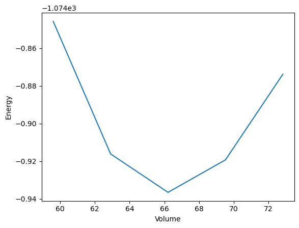

import os
import matplotlib.pyplot as plt
import numpy as np
from ase.build import bulk
from ase.io import write
from adis_tools.parsers import parse_pw
Functions#
def generate_structures(structure, strain_lst):
structure_lst = []
for strain in strain_lst:
structure_strain = structure.copy()
structure_strain.set_cell(
structure_strain.cell * strain**(1/3),
scale_atoms=True
)
structure_lst.append(structure_strain)
return structure_lst
def plot_energy_volume_curve(volume_lst, energy_lst):
plt.plot(volume_lst, energy_lst)
plt.xlabel("Volume")
plt.ylabel("Energy")
plt.savefig("evcurve.png")
def write_input(input_dict, working_directory="."):
filename = os.path.join(working_directory, 'input.pwi')
os.makedirs(working_directory, exist_ok=True)
write(
filename=filename,
images=input_dict["structure"],
Crystal=True,
kpts=input_dict["kpts"],
input_data={
'calculation': input_dict["calculation"],
'occupations': 'smearing',
'degauss': input_dict["smearing"],
},
pseudopotentials=input_dict["pseudopotentials"],
tstress=True,
tprnfor=True
)
def collect_output(working_directory="."):
output = parse_pw(os.path.join(working_directory, 'pwscf.xml'))
return {
"structure": output['ase_structure'],
"energy": output["energy"],
"volume": output['ase_structure'].get_volume(),
}
def workflow(project, structure, pseudopotentials):
# Structure optimization
job_qe_minimize = pr.wrap_executable(
job_name="job_qe_minimize",
write_input_funct=write_input,
collect_output_funct=collect_output,
input_dict={
"structure": structure,
"pseudopotentials": pseudopotentials,
"kpts": (3, 3, 3),
"calculation": "vc-relax",
"smearing": 0.02,
},
executable_str="mpirun -np 1 pw.x -in input.pwi > output.pwo",
execute_job=True,
)
# Generate Structures
structure_lst = pr.wrap_python_function(generate_structures)(
structure=job_qe_minimize.output.structure,
strain_lst=np.linspace(0.9, 1.1, 5),
)
# Energy Volume Curve
energy_lst, volume_lst = [], []
for i, structure_strain in enumerate(structure_lst):
job_strain = pr.wrap_executable(
job_name="job_strain_" + str(i),
write_input_funct=write_input,
collect_output_funct=collect_output,
input_dict={
"structure": structure_strain,
"pseudopotentials": pseudopotentials,
"kpts": (3, 3, 3),
"calculation": "scf",
"smearing": 0.02,
},
executable_str="mpirun -np 1 pw.x -in input.pwi > output.pwo",
execute_job=True,
)
energy_lst.append(job_strain.output.energy)
volume_lst.append(job_strain.output.volume)
return {"volume": volume_lst, "energy": energy_lst}
Setup#
from pyiron_base import Project
pr = Project("test")
pr.remove_jobs(recursive=True, silently=True)
Workflow#
job_workflow = pr.wrap_python_function(workflow)
job_workflow.input.project = pr
job_workflow.input.structure = bulk('Al', a=4.05, cubic=True)
job_workflow.input.pseudopotentials = {"Al": "Al.pbe-n-kjpaw_psl.1.0.0.UPF"}
job_workflow.run()
The job workflowdbcdde11bde789bfe23b268a60c426c2 was saved and received the ID: 1
The job job_qe_minimize was saved and received the ID: 2
The job generate_structuresffd5c51457c48a1cff1923a2d98eb48c was saved and received the ID: 3
The job job_strain_0 was saved and received the ID: 4
The job job_strain_1 was saved and received the ID: 5
The job job_strain_2 was saved and received the ID: 6
The job job_strain_3 was saved and received the ID: 7
The job job_strain_4 was saved and received the ID: 8
Result#
plot_energy_volume_curve(
volume_lst=job_workflow.output.result["volume"],
energy_lst=job_workflow.output.result["energy"]
)

Summary#
pr.job_table()
| id | status | chemicalformula | job | subjob | projectpath | project | timestart | timestop | totalcputime | computer | hamilton | hamversion | parentid | masterid | |
|---|---|---|---|---|---|---|---|---|---|---|---|---|---|---|---|
| 0 | 1 | finished | None | workflowdbcdde11bde789bfe23b268a60c426c2 | /workflowdbcdde11bde789bfe23b268a60c426c2 | None | /home/jovyan/test/ | 2024-03-27 18:09:12.391144 | NaT | NaN | pyiron@jupyter-jan-2djanssen-2dqua-2dsso-5fpyiron-5fbase-2dtqm3r7gv#1 | PythonFunctionContainerJob | 0.4 | None | None |
| 1 | 2 | finished | None | job_qe_minimize | /job_qe_minimize | None | /home/jovyan/test/ | 2024-03-27 18:09:12.461873 | 2024-03-27 18:09:58.263945 | 45.0 | pyiron@jupyter-jan-2djanssen-2dqua-2dsso-5fpyiron-5fbase-2dtqm3r7gv#1 | ExecutableContainerJob | 0.4 | None | None |
| 2 | 3 | finished | None | generate_structuresffd5c51457c48a1cff1923a2d98eb48c | /generate_structuresffd5c51457c48a1cff1923a2d98eb48c | None | /home/jovyan/test/ | 2024-03-27 18:09:58.313609 | NaT | NaN | pyiron@jupyter-jan-2djanssen-2dqua-2dsso-5fpyiron-5fbase-2dtqm3r7gv#1 | PythonFunctionContainerJob | 0.4 | None | None |
| 3 | 4 | finished | None | job_strain_0 | /job_strain_0 | None | /home/jovyan/test/ | 2024-03-27 18:09:58.477003 | 2024-03-27 18:10:07.059195 | 8.0 | pyiron@jupyter-jan-2djanssen-2dqua-2dsso-5fpyiron-5fbase-2dtqm3r7gv#1 | ExecutableContainerJob | 0.4 | None | None |
| 4 | 5 | finished | None | job_strain_1 | /job_strain_1 | None | /home/jovyan/test/ | 2024-03-27 18:10:07.429814 | 2024-03-27 18:10:17.057758 | 9.0 | pyiron@jupyter-jan-2djanssen-2dqua-2dsso-5fpyiron-5fbase-2dtqm3r7gv#1 | ExecutableContainerJob | 0.4 | None | None |
| 5 | 6 | finished | None | job_strain_2 | /job_strain_2 | None | /home/jovyan/test/ | 2024-03-27 18:10:17.833435 | 2024-03-27 18:10:28.145417 | 10.0 | pyiron@jupyter-jan-2djanssen-2dqua-2dsso-5fpyiron-5fbase-2dtqm3r7gv#1 | ExecutableContainerJob | 0.4 | None | None |
| 6 | 7 | finished | None | job_strain_3 | /job_strain_3 | None | /home/jovyan/test/ | 2024-03-27 18:10:28.190237 | 2024-03-27 18:10:40.343077 | 12.0 | pyiron@jupyter-jan-2djanssen-2dqua-2dsso-5fpyiron-5fbase-2dtqm3r7gv#1 | ExecutableContainerJob | 0.4 | None | None |
| 7 | 8 | finished | None | job_strain_4 | /job_strain_4 | None | /home/jovyan/test/ | 2024-03-27 18:10:40.400240 | 2024-03-27 18:10:53.349634 | 12.0 | pyiron@jupyter-jan-2djanssen-2dqua-2dsso-5fpyiron-5fbase-2dtqm3r7gv#1 | ExecutableContainerJob | 0.4 | None | None |